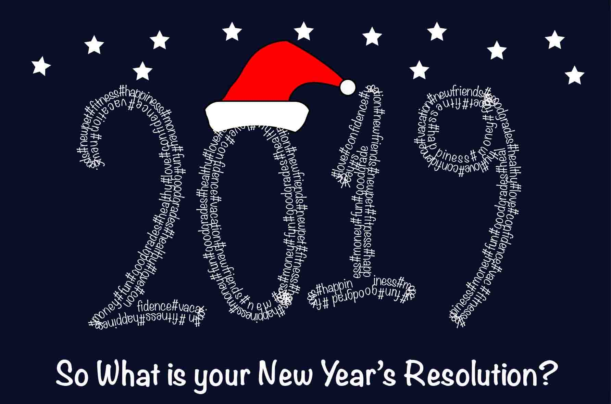

ברכה לשנה החדשה
2019
במסגרת קורס "גרפיקה ממוחשבת לטל"מ" נתבקשנו ליצור ברכה לשנה החדשה. אחרי ששיחקתי עם האילוסטרייטור ראיתי שניתן להפוך קווים שציירתי לטקסט וכך נולד הרעיון למעשה בעזרת המברשת ציירתי את ה2019, ומהשפעת המדיה החברתית חשבתי על הטקסט שאכתוב בתוכו, כך שכתבתי מלא תגיות שונות שהן בעצם איחולים לשנה החדשה. גם המשפט היה בהשראת המדיה החברתית, מפני שניתן היה לראות את זה המון באותה התקופה... מתוך מחשבה לקשט את זה קצת, ומכך שהשנה החדשה מתרחשת בצמוד לחג המולד, יצרתי באילוסטרייטור כובע סנטה שהלבשתי על הספרה 0...